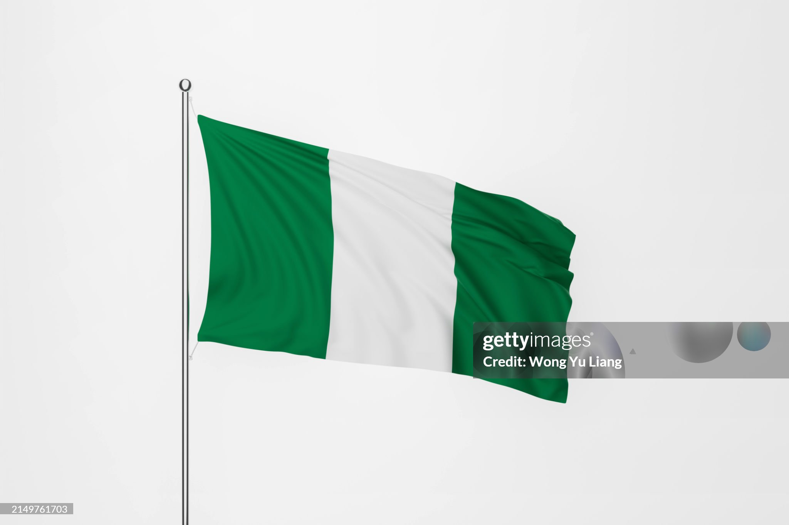

President Bola Tinubu has siggned the National Anthem Bill 2024 into law,
reinstating Nigeria's original Anthem,Nigeria WE HEIL THEE

Nigeria is a federal republic comprising 36 states and the Federal Capital Territory,
Nigeria, an African country on the Gulf of Guinea, has many natural landmarks and wildlife reserves. where the capital,
Abuja, is located. The largest city in Nigeria is Lagos
Nigeria, an African country on the Gulf of Guinea, has many natural landmarks and wildlife reserves
- CAPITAL
- -ABUJA
- PRISDENT
- -BOLA AHMED TINUBU
- CURRENCY
- -NIGERIAN NAIRA
- POPULATION
- -218.5 Million (2022) World Bank
- OFFICIAL LANGUAGE
- -ENGLISH
- DIALING CODE
- _-+234
- CROSS DOMESTIC PRODUCT
- -472.6Billion USD (2022) World Bank
What was Nigeria Called Before
Before Flora Shaw suggested the name Nigeria, other proposed names included;
- Royal Niger Company Territories
- Central Sudan
- Niger Empire
- Niger Sudan
- Hausa Territories
What is Nigeria rich in.
Who is the richest man in Nigeria.
Who built Nigeria.
What is the biggest Religion in Nigeria.
Who is the current President of Nigeria
Is Nigeria secure ?
NAMES OF THE SERVING PRESIDENTS IN NIGERIA

| PRESIDENT |
SERVING YEARS |
| Goodluck Ebele Jonathan |
2010 to 2015 |
| Umaru Musa Yar'Adu |
2007 to 2010 |
| Olusegun Obasanjo |
1999 to 2007 |
| General Abdulsalmi |
1998 to 1999 |
| General Sani Abacha |
1993 to 1998 |
| Ernest Shonekan |
1993 to 1993 |
| General Babangida |
1985 to 1993 |
| General M Buhari |
1983 to 1985 |
| President Shehu Shagari |
1979 to 1983 |
| General Obasanjo |
1976 to 1979 |
| General Murtala Muhammad |
1975 to 1976 |
| Yakubu Gawon |
1966 to 1975 |
| Johnson Aguiyi-Ironsi |
1966 to 1966 |
| Azikiwe Nnamadi |
1963 to 1966s |
THE MINISTRIES IN NIGERIA
- Federal Ministry of Internal Affairs
- Federal Ministry of Justice
- Federal Ministry Labour and productivity
- Federal Ministry of Petroleum Resources
- Federal Ministry of Power and Steel
- Federal Ministry of Science & Technology
- Federal Ministry Solid Minerals Development
- Federal Ministry Special Duties
- Federal Ministry Transport
- Federal Ministry of Water Resource & Rural Development
- Federal Ministry of Women and Social Development
- Federal Ministry of Works
- Federal Ministry of Youth & Sports
- Federal Ministry Agriculture and Natural Resources
- Federal Ministry of Aviation
- Federal Ministry of Commerce & Tourism
- Federal Ministry of Information & Communication
- Federal Ministry of Defence
- Federal Ministry of Education and Youth Development
- Federal Ministry of Environment
- Federal Ministry for Federal Capital Territory(M.F.C.T)
- Federal Ministry of Finance and Economic Development
- Federal Ministry of Foreign Affairs
- Federal Ministry of Health and Social Services
- Federal Ministry of Industries
- Federal Ministry of Culture Tourism and National Orientation